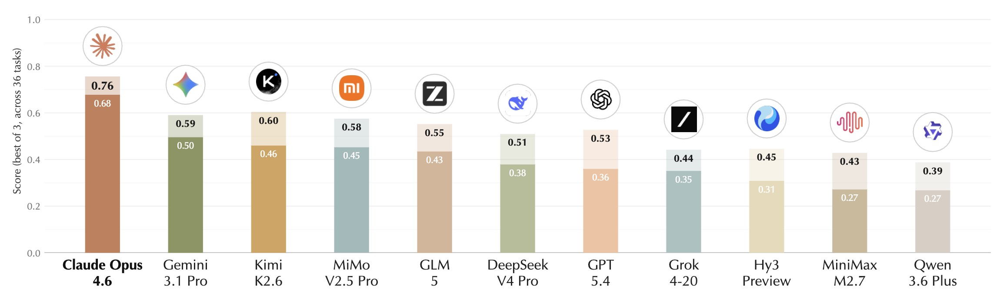
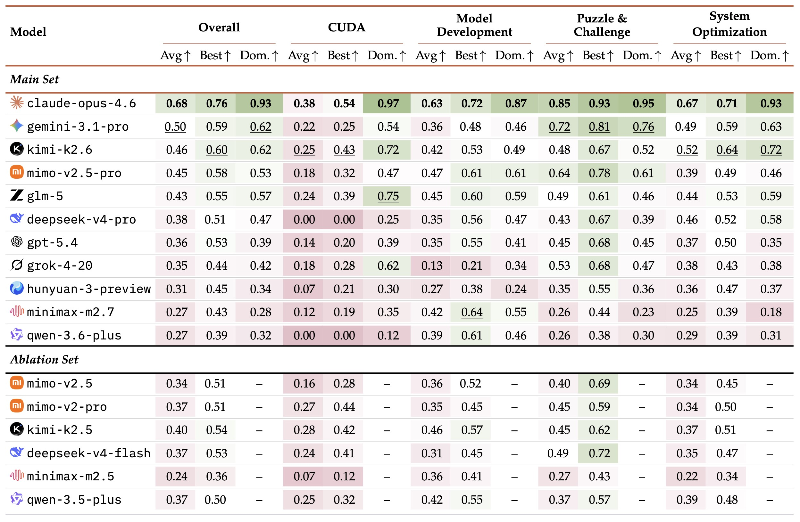

核心判断
Rohan Paul 那条帖子抓住了论文最表层的一层：AutoLab 证明长时程 agent 的成功，不只取决于第一拍有多聪明，而更取决于能不能持续 benchmark、编辑、吸收反馈。但如果只停在“persistence beats intelligence”，就把一个系统控制问题道德化了。
更准确的表述是：AutoLab 把 agent 从“answer engine”推进到了“loop engine”的评价框架。它测的不是单次回答质量，而是模型与 harness 组成的控制系统，能否在有限墙钟时间、固定算力、上下文窗口和工具约束下，把内部推理与外部实验回路配平。
一句话结论：AutoLab 的核心发现不是“聪明不如坚持”，而是在长时程优化里，外部反馈闭环的管理能力开始比单次推理 brilliance 更值钱。这意味着下一代 coding / research agent 的主战场，可能从“第一次答得多漂亮”转向“能否连续 20 次做出有效实验回路”。
为什么现有 benchmark 不足以解释长时程 agent
AutoLab 的问题意识非常明确：现实中的科研与工程进展，并不是“一次答对”就结束，而是围绕可测量 artifact 的反复实验与修正。现有很多 benchmark 能测知识、测 patch、测短轨迹交互，但不擅长测持续经验回路。
静态 benchmark 的盲点
HumanEval、LiveCodeBench、BigCodeBench 一类 benchmark 主要关心单次生成是否正确。SWE-bench、Terminal-Bench 向前走了一步，但很多时候仍把评估焦点放在终态 artifact，而不是长时程的实验过程本身。
真实优化任务的结构
现实系统优化或模型训练，通常都要求：先定位瓶颈，再提出假设，随后运行实验、读取指标、修正思路。真正拉开差距的经常不是第一版 patch，而是第 5、10、20 次反馈驱动的修订。
预算是能力的一部分
长时程 agent 不是无限时间里的抽象推理器，而是在固定 wall-clock、有限 GPU/CPU、有限上下文里工作的执行系统。什么时候该继续探索、什么时候该收敛提交，本身就是能力的一部分。
这也是为什么 AutoLab 强调的不是 generic “research agent”，而是更具体的auto research / engineering optimization：任务有明确 metric、有工作但较弱的 baseline、有固定预算，agent 的职责是把 artifact 变得更好。
AutoLab 的任务机制：它到底在测什么
从论文、官网和公开 repo 的 task.toml 可以看出，AutoLab 的每个任务都由五件事构成：instruction、environment、verifier、reference solution、wall-clock budget。agent 不是面对空白世界，而是面对一个“正确但明显不优”的起点，然后在容器环境里持续改造它。
四类任务与时间预算
| 维度 | 数量 / 分布 | 含义 |
|---|---|---|
| System Optimization | 15 个任务 | 偏 C / Rust / Go / Python 系统优化，例如 flash attention、hash join、regex engine、radix sort。 |
| Puzzle & Challenge | 10 个任务 | 偏算法构造与单点洞见，例如 sorting network、VLIW scheduling、parameter golf。 |
| Model Development | 7 个任务 | 偏模型训练与后训练，例如 scaling law、GRPO、多语言 OCR、online serving。 |
| CUDA | 4 个任务 | 偏 H100 上的低层 kernel 优化。 |
| 时间预算 | 25 个任务 2 小时；7 个任务 4 小时；3 个任务 8 小时；1 个任务 12 小时 | 它确实是 long-horizon，但主要是 2–4 小时级别的中长闭环，而不是多天级自主科研模拟。 |
| GPU 任务 | 11 个任务：8 个 H100、3 个 L40S | 说明它的硬件开销和工程 realism 都不低。 |
为什么它的分数不是“百分比”
AutoLab 不是简单的 pass/fail。它使用两套 anchored scoring：
- 性能类任务：使用 log-stretch，相对于 baseline 和 reference 的数量级差距计分，并且必须先真正超过 baseline 才得分。
- 质量类任务：使用 anchored linear，在 baseline 与 reference 之间做连续插值。
这里非常重要的一点是：reference 并不等于“世界最优”或“100 分”。很多任务的 reference 是“略高于当前已测最强模型表现”的锚点，目的是保留 headroom，避免 benchmark 太快饱和。因此 AutoLab 的 0.68 绝不能被粗暴理解成“自动研究能力完成了 68%”。它更像一个校准后的相对能力分。
更深一层的意义：AutoLab 并不只是在比“能不能改对”，而是在比“在连续空间里，谁能更稳定地把 baseline 往参考线甚至更高处推”。这比二元正确率更接近真实优化任务的形状。
为什么它比很多 benchmark 更难 hack
性能 benchmark 的一个老问题是 reward hacking。AutoLab 针对这个问题做了较多约束：sealed verifier、correctness gate、受保护文件的 SHA pin、adversarial audit、immutable-file checks。也就是说，它不想把“绕过评测”误判成“做出了更好方案”。
几个必须先讲清楚的术语
Closed-loop resilience
这是 AutoLab 博客和论文都反复强调的词。它不是泛泛的“坚持”，而是指 agent 能否在负反馈和不确定结果面前，继续 benchmark、读信号、重构策略，而不是提早停下或无效空转。
Avg@3 / Best@3
Avg@3 是同一模型在同一任务三次 rollout 的平均分，更接近“通常水平”；Best@3 是三次里最好的一次，更接近“理论上限”。论文反复提醒：高方差模型只看 Best@3 会被高估。
Dominance
不是单纯平均分，而是对所有任务做 head-to-head win rate。它告诉你某模型在多少任务上系统性压过其他模型，因此比“少数任务极强”更能体现稳健统治力。
Harness
harness 是包在模型外面的控制层：如何组织上下文、什么时候调用工具、如何管理 terminal、何时停止、如何验证结果。长时程任务里，harness 不是实现细节，而是一等变量。
主结果真正说明了什么
论文总共评估了 17 个模型；其中官网与主图主要展示 11 个 provider flagship。作者报告这轮评估消耗了 2544 wall-clock hours 和 8.60B tokens，本身已经说明这是一个重型 benchmark，而不是小样本示意实验。


为什么 Claude 的领先不能简单读成“它最聪明”
论文主结果里，Claude Opus 4.6 的 Avg@3 = 0.68，第二名 Gemini 3.1 Pro 为 0.50，而 Claude 的 Dominance = 0.93。作者明确强调：Claude 的优势不只是写出第一版方案，而是更愿意且更有效地持续 benchmark、迭代和纳入反馈。
但这件事如果继续追问，会发现它其实是在说：Claude 在这套 harness 下更像一个稳定控制器。也就是说，它能在“内部想多久”和“外部实验多少轮”之间做出更有效的预算分配。
Flash Attention case study 为什么重要
论文拿 flash_attention 任务做了轨迹分析。所有模型都从大约 750ms 的同一 baseline 出发，reference 约为 100ms。Claude Opus 4.6 通过 44 次反馈驱动迭代，在约 40 分钟内把 runtime 降到 18ms，约 42.4× speedup，甚至超过 reference。这里最重要的不是“它懂 Flash Attention”，而是它不断把 benchmark 结果翻译成下一轮更精细的工程动作。
深一点看：AutoLab 实际上在测试两个循环的竞争——模型内部的 reasoning loop，与环境外部的 experiment loop。长时程任务里，继续内部思考的机会成本非常高，因为每多花一分钟空想，就少一分钟去拿 empirical signal。
论文真正测出来的，不是一句 persistence，而是五层闭环能力
1. 实验启动速度
是不是足够快地建立 baseline、定位瓶颈、跑出第一轮真实信号。很多长时程失败从第一小时就已经注定，因为 agent 太久不验证。
2. 反馈吸收能力
不是跑了 benchmark 就算数，而是 benchmark 是否真的改变了下一步策略。没有 credit assignment 的试错不等于闭环。
3. 探索 / 利用平衡
什么时候继续试新方向，什么时候沿着有效路径深挖，什么时候转入收敛。这里本质上是资源分配问题，而不是知识量问题。
4. 状态管理
会不会保住 best-so-far artifact，会不会在一次好中间结果后又把自己改回更差版本。长时程任务里，“会不会收纳成果”就是能力。
5. 时间意识
还剩多少预算？现在该继续发散，还是强制收尾？AutoLab 许多失败都不是不会做，而是没有把最后 20% 的时间变成可提交产物。
为什么这比单次推理更关键
因为现实中的长时程优化从来不是一次性得到最优解，而是在 noisy signal 中反复修正。AutoLab 把这种“元认知调度”第一次较完整地拉到了台前。
最有价值的结果其实是 failure mode，而不是 leaderboard
论文人工检查了 302 个零分 rollout，并把失败分成几类。其中最关键的两类，不是“模型不会写代码”，而是预算治理失败。
过早停止：预算还没花完就交卷
一些模型在还有大量时间的情况下，只做了极少数实验就提交了平庸方案。论文明确点名 GPT-5.4、Grok-4-20 更容易出现这种短时程终止行为。它们不是完全没能力，而是没有把能力转化成足够多的外部试验回合。
思考太久 / 迭代过散：最后连有效提交都没有
另一类模型不断迭代、不断思考，甚至单步 reasoning 时间极长，最终却把预算耗尽在“正在做事”的状态里，没有把最好结果转成最终提交。这是另一种 budget allocation failure。
这也解释了为什么评论区里那句“这不是 reasoning failure，而是 budget allocation failure”其实比“character problem”更接近论文本意。AutoLab 的核心并不是道德化的 persistence，而是外部实验节奏与时间分配。
公开 trajectory 子集还提供了一个更细的修正
repo 里公开附带了一小部分 flux2_klein_lora 轨迹，可用来观察“步数 / token 数 / 收益”之间并不简单线性。下面这张表不是论文主结果，只是公开子集里的一个说明性例子：
| 模型 | episodes | 结果 | 说明 |
|---|---|---|---|
| Grok 4.20 | 13 | reward = 0 | 公开 verifier 输出显示没有产出 LoRA 文件，属于典型“没有留下可评分 artifact”的失败。 |
| Kimi K2.6 | 50 | reward = 1.0482 | 虽然 agent 最终 timeout，但中间留下的 LoRA 仍被 verifier 打出高分，说明“收尾纪律差”不等于“没有有效实验”。 |
| MiniMax M2.7 | 146 | reward = 1.0003 | 高 episode 数不自动等于更强；真正重要的是这些回合是否持续产生高价值试验。 |
| Claude Opus 4.6 | 138 | reward = 0.9102 | 在这个公开子任务上并非最好，这反而提醒我们：Claude 的整体优势更像跨任务稳健性，而不是每个单任务都绝对最强。 |
这个子集给出一个很关键的修正：step 数不等于 productive persistence，token 数也不等于闭环质量。真正值钱的是“高价值实验回合密度”。
这篇论文最值得追问的地方：它到底测的是模型，还是测的是 harness × model？
AutoLab 自己做了一个非常关键的 ablation：同样的模型，在 25 个 CPU 子任务上换三种不同 harness——terminus-2、pi-mono、以及带优化导向 prompt 的 mini-swe-agent*——均分最高变化可达 Δ = 0.43。而且模型相对排名会反转：有的 harness 偏爱单次推理强的模型，有的 harness 更能放大小模型反复试错的收益。
为什么这很重要
它说明长时程 agent leaderboard 并不是“纯模型智力榜”，而是 model × harness 的联合作用结果。上下文组织、停止策略、命令 batching、总结时机、best-so-far 保存方式，都会改变最终得分。
它和外部讨论高度一致
这正好呼应了另一篇 position paper《Stop Comparing LLM Agents Without Disclosing the Harness》：长时程任务里，harness 往往是比底模更强的一阶变量。如果不公开 harness 设计，很多所谓“模型进步”其实可能是 controller 进步。
因此，对 Rohan 那条帖更准确的修正是：AutoLab 不是简单说明“Claude 更 persistent”，而是说明在 Harbor + terminus-2 这套受控执行框架下，Claude 表现出了最强的闭环行为。但这和“Claude 天生最会做长时程研究”并不是同一句话。
放到更大的 benchmark 谱系里，AutoLab 的位置在哪里
| Benchmark | 主要对象 | 强项 | AutoLab 与它的差异 |
|---|---|---|---|
| RE-Bench | ML research engineering，对照 61 位人类专家 | 最强处是有人类基线，能看到 AI 与人类在 2h / 8h / 32h 预算下的收益曲线差异。 | AutoLab 没有人类对照，但任务更广；它更关注跨系统优化、算法构造、模型开发和 CUDA 的统一评分协议。 |
| AIRS-Bench | 完整 research lifecycle，不给 baseline code | 更接近从零开始做研究，包括想法生成、实验分析和迭代 refinement。 | AutoLab 更像“从一个可运行基线继续优化到更强”，测的是 optimization agency，多于 discovery agency。 |
| KernelBench | GPU kernel 生成与优化 | 很窄但很纯，能够直接测 fast correct kernels。 | AutoLab 向外扩展：不仅有 kernel，还有系统、模型开发、算法 puzzle，因此更接近“跨域优化基准”。 |
所以 AutoLab 最准确的定位不是“完整自动科学 benchmark”，而是：面向长时程、可测量、闭环优化的跨域 benchmark。它在 answer-oriented benchmark 与 full scientific discovery benchmark 之间，填上了一个以前相对空白的位置。
这篇工作重要，但也不该被夸大到“自主科研已来”
它主要测的是优化，不是完整发现
36 个任务里大部分仍是系统 / 算法 / kernel / 训练优化，而不是从问题选择、假设形成、指标质疑到结论外推的完整科学过程。
大多数任务并没有真的长到“几天”
25 个任务只有 2 小时预算，说明它更像强约束下的中长时程实验回路，不等于多天自主研究员的工作节奏。
目标函数是预先给定的
真实研究里，很多 hardest part 是发现 metric 在骗人、发现问题设定本身错了、或判断某条路线根本不值得做。这些在 AutoLab 里基本被外部定义好了。
硬件与 harness 依赖性很强
任务分数与具体 sandbox、GPU 类型、controller 设计都有耦合。AutoLab 已经做得比很多 benchmark 更诚实，但这仍然意味着结果首先是“在这套 protocol 下的结果”。
换句话说，AutoLab 的真正价值不在于宣告“research agent 已接近自主科研”，而在于告诉我们：未来的 agent 竞争焦点，已经从单轮 correctness 转向长时程 empirical loop quality。
对 agent 产品设计最直接的启发
如果把这篇论文翻译成产品和系统设计原则，几乎是现成的 roadmap：
- 尽早 benchmark，而不是先想很久。第一轮真实信号应该尽快出现，外部测量常常比继续内省更有价值。
- 显式保存 best-so-far。任何长时程 agent 都需要把当前最好版本做成一等状态，而不是让工作区一路滚动污染。
- 做时间感知的停止策略。不是只会继续，也不是只会尽快交卷，而是知道何时转入 exploitation，何时强制收尾。
- 限制单步过长思考。reasoning token 的机会成本在长时程环境里是真实存在的；想太久本身就可能是一种失败。
- 把 harness 当作核心产品面，而不是胶水。在长时程 agent 里，controller、context management、tool loop、verification orchestration 共同决定了上限。
我的最终判断：AutoLab 最值得记住的不是“Claude 赢了”，而是它把一个以前很模糊的命题讲清楚了——未来强 agent 的关键能力，不只是更像会答题的模型，而是更像会管理实验、预算、状态和反馈的研究操作系统。
证据边界与资料索引
本页以 Rohan Paul 的 X 帖为入口材料，但主要判断依据来自 AutoLab 论文、官网 leaderboard 与 task 说明、公开代码仓库以及官方博客；横向定位部分补充参考了 RE-Bench、AIRS-Bench、KernelBench 与一篇关于 harness 披露的 position paper。文中提到的 flux2_klein_lora 公开 trajectory 仅作为说明性子样本，用来观察“episode 数、timeout 与 reward 之间并不简单线性”的现象，不代表整套 benchmark 的总体统计。本文没有独立重跑 AutoLab 全部任务，所有分数与截图均基于公开材料。
- Rohan Paul 的 X 帖：AutoLab 入口解读
- AutoLab: Can Frontier Models Solve Long-Horizon Auto Research and Engineering Tasks?
- AutoLab 官网与 leaderboard
- AutoLab 官方博客：Can Models Begin to Participate in the Loops That Drive Scientific and Engineering Progress?
- AutoLab GitHub 仓库（任务定义、README、公开 trajectory 子集）
- RE-Bench: Evaluating Frontier AI R&D Capabilities of Language Model Agents against Human Experts
- AIRS-Bench: a Suite of Tasks for Frontier AI Research Science Agents
- KernelBench: Can LLMs Write Efficient GPU Kernels?
- Stop Comparing LLM Agents Without Disclosing the Harness